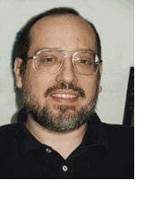

| Founder and President of Degel Software Ltd

David Goldfarb
From Internet TCP/IP protocols in 1980 to killer apps for mobile devices
in 2002, David has a track
record on the cutting edge of commercial software development.
-
In 1980, he worked with a Massachusetts
Institute of Technology (MIT) group to develop the Internet TCP/IP protocols and has been an
avid user of the net ever since.
-
David left academia and got his professional start in the early 1980s,
at Symbolics, Inc., the foremost
manufacturer of artificial intelligence (AI) workstations. In the early
90s, David championed and spearheaded a rewrite of software for HBOC Pegasus, an Israeli software
company developing a Windows application for the medical market. He
designed and wrote major portions of the application, guided in-house
developers, and advised management regarding the latest advances in
Windows.
-
In 1996, he co-founded
2AM
Development Ltd., and served as VP of Technology, heading its
software development and design, patent coordination, and technical
strategy practices.
-
David created Degel in 1988. In this
capacity, he serves as a consultant and coder extraordinaire for a
variety of firms, offering software management, technical direction, and
programming services. In the early years of Degel, David specialized in
graphical user interfaces, image processing, and Internet information
retrieval.
-
Recently, David has steered Degel to the emerging application area of
mobile technologies, assisting clients in moving their software from
desktops to mobile phones and PDAs.
David received a Bachelor's degree in Computer Science from
Massachusetts Institute of Technology
(MIT) in 1984. A native New Yorker, David holds dual American/Israeli
citizenship. Since the mid 1980s, he lives in Israel with his family.
|